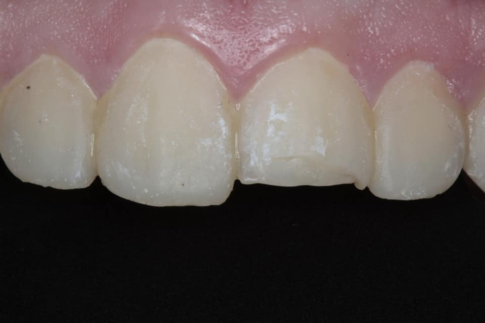

Se realizó aislamiento relativo con rollos de algodón. Se limpió la superficie con piedra pómez y agua.
Tratamientos dentales
En nuestra clínica, cada tratamiento está diseñado pensando en ti: en tu bienestar, tu comodidad y en lograr los mejores resultados posibles.
Desde limpiezas preventivas hasta tratamientos avanzados de ortodoncia y estética dental, te ofrecemos soluciones integrales para cuidar tu salud bucal con tecnología de vanguardia y un trato humano excepcional.
Restauración dental por fractura
Restauración de fractura dental con resina directa
Diagnóstico inicial
El paciente acudió a consulta con una fractura en el tercio incisal del incisivo central superior derecho, producto de un traumatismo leve.
La fractura no afectaba la pulpa y el diente presentaba sensibilidad leve pero conservaba vitalidad.
Resultado final
El diente recuperó su forma, color y función, integrándose de forma armoniosa al conjunto dental. La restauración es imperceptible a simple vista y la sonrisa fue completamente rehabilitada sin comprometer estructura dental sana.

Restauración y Rehabilitación dental

¿Qué es una rehabilitación dental con implante?
Cuando un diente se pierde —ya sea por fractura, caries avanzada o enfermedad periodontal— no solo se afecta la estética de la sonrisa, sino también la capacidad funcional para hablar y masticar correctamente.
La rehabilitación con implante es una solución moderna, segura y altamente estética, que permite reemplazar una pieza dental ausente sin afectar los dientes vecinos.
Un implante actúa como una raíz artificial de titanio que se integra al hueso, sobre la cual se coloca posteriormente una corona personalizada. Este tratamiento ofrece durabilidad, estabilidad y un resultado natural que restablece completamente la función y apariencia del diente perdido.
Procedimiento realizado
Evaluación y planificación
Se realizó estudio clínico y radiográfico para confirmar la viabilidad ósea, espacio protésico y condiciones de tejidos blandos. Se confirmó la opción de un implante oseointegrado como solución ideal.
Colocación del implante
Mediante cirugía mínimamente invasiva, se colocó el tornillo de titanio en el alveolo edéntulo, cuidando la paralelidad y profundidad. Se dejó un periodo de osteointegración de aproximadamente 3 meses.

Colocación del pilar protéstico y corona final
Tras comprobar la estabilidad del implante, se colocó el pilar protésico personalizado y posteriormente una corona cerámica de alta estética. Se cuidó forma y contacto proximal para preservar la función masticatoria y armonía con las piezas adyacentes.

Resultado
Se logró una rehabilitación completa, funcional y estética con un resultado indistinguible de un diente natural. El paciente recuperó la seguridad al masticar y sonreír, sin necesidad de comprometer piezas vecinas como en el caso de un puente convencional.